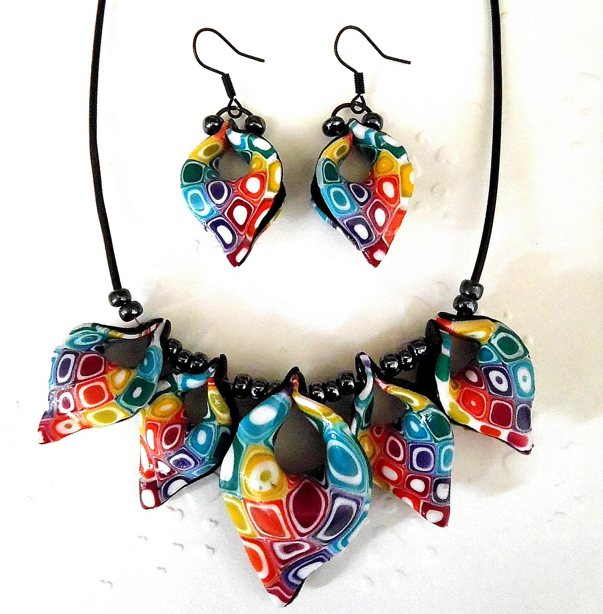

Polymer
Hmota Fimo (polymer) vznikla okolo roku 1930, za účelem výroby hlaviček panenek. Autorka tohoto nápadu jej v 60. letech prodala společnosti EberhardFaber, která začala tento materiál zdokonalovat a prodávat pod značkou Fimo. Následoval vývoj dalších značek a jejich rozvoj.
Fimo hmota je specifická tím jaké výrazně zářivé barvy má a zaujme na první pohled. Z hmoty se nejprve vyrábějí ruzné obrazce které se následně skládají a vznikají z nich od krásných řetízků až po hravé náušnice. Následuje vypalování, poté broušení pro uhlazení povrchu a následné lakování pro zvýšení odolnosti. Výsledkem je je šperk který je naprosto jedinečný a který dozajistě zaujme své okolí.
V méme portfoliu nalezne mnoho náušnic a přívěsků, které se dají zakoupit ať už v sadě nebo i zvlášt. Velmi populární jsou tzv. roztahováky do uší, díky kterým vznikají dnes tolik populární "tunely". Vše je zdravotně nezávadné a hypoalergení, všechna zapínaní jsou poniklovaná aby rovněž nezpůsobovala alergie a zároveň nikl nepodléhá korozi.